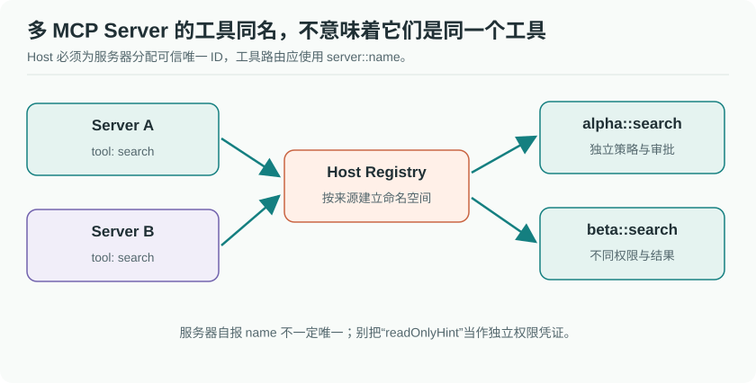
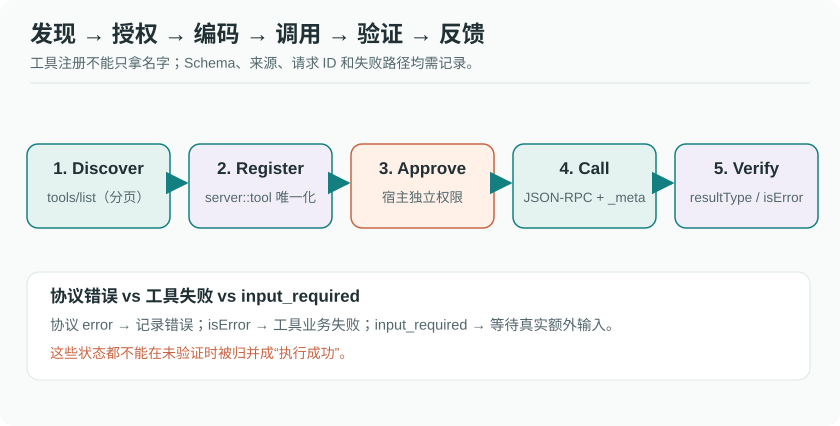

实现 MCP 工具集成：多服务器路由、Schema 与授权
针对 MCP 2026 的 tools/list 与 tools/call，设计可测试的 Host 注册表，处理服务器名称碰撞、授权、参数校验、协议错误与旧版互操作。
接入两个 MCP Server，最先出现的问题是重名
假设代码索引 Server A 暴露 search，GitHub Server B 也暴露 search。模型调用“search”时，客户端必须知道目标到底是哪一个服务器、使用哪份输入 Schema、使用哪个审批规则。只保存一个按工具名索引的字典，第二个注册会覆盖第一个，可能导致“在 A 上审批，在 B 上执行”的安全错误。

MCPClientManager 的正确职责分工
一个最小客户端集成层需要五个模块：连接管理（建立和清理传输）、能力发现（检索工具 Schema）、注册中心（按可信服务器 ID 建命名空间）、权限网关（本次工具调用是否允许）、结果适配器（关联 JSON-RPC ID、识别错误和额外输入）。
本章代码专注注册与消息封装，以便离线测试。它不启动进程、连接网络，也不模仿 Claude Code 未公开的 MCPClientManager 内部函数。

对现代 MCP 的 stdio/HTTP 有哪些具体约束
现代 2026-07-28 规范的 stdio 消息要求每条 JSON-RPC 用单行 UTF-8 编码，不能向 stdout 混入日志；现代 Streamable HTTP 使用单端点 POST，每次请求携带协议版本和必要 Header，响应为 JSON 或请求级 SSE。旧版客户端需要独立兼容实现 initialize，不能把它硬插进所有现代连接。
Claude Code 产品的 MCP 设置还包括本地、项目、用户范围与信任提示，远程服务器可要求 OAuth 或动态 Header；真实 Token 不应硬编码在公开 .mcp.json 文件里。服务器若断线、协议不匹配或 discovery 失败，应保留明确的不可用状态，而不是静默假装“没有工具”。
工具发现必须支持分页、变更与同名冲突
在现代规范中，tools/list 可以分页返回，并通过缓存策略减少反复发现。工具名在一个 Server 内应该唯一，但不同 Server 可能碰撞；Host 自己分配可信稳定 ID，形成 alpha::search、beta::search，不能使用远端自报 serverInfo.name 作为唯一安全主键。
一个服务器的注释 readOnlyHint:true 可以帮助界面描述意图，但可能是错误或不可信的元数据。真正授权还要经过宿主的逐工具策略。
用标准库构造并验证工具注册表
示例 examples/mcp_registry.py 以两份已取得的工具列表创建注册表；同名工具不会覆盖。只接受允许列表里的合格工具，拒绝缺失参数、未知参数或类型不匹配；最终组装带有 2026 元数据的请求：
reg = ToolRegistry()
reg.add_server_tools("docs", (one_tools_list_page,))
assert reg.names() == ("docs::search",)
rpc = reg.prepare_call(
"docs::search", {"query": "context window"}, 7,
allowed=frozenset({"docs::search"})
)
assert rpc["method"] == "tools/call"
assert rpc["params"]["name"] == "search"为保持没有第三方依赖，示例只校验简单的 JSON Schema 子集（object、string、integer、required）。生产环境应使用完整 JSON Schema 校验器，并验证输出 Schema 与实际数据。
不要把服务端返回的内容直接放进系统指令
工具结果可能包含未经验证的网页、日志、仓库文件和远端错误消息，也可能含有恶意 Prompt 注入内容。客户端应把它们作为有来源的工具数据记录，而不是作为新的高优先级 System Prompt。更不要因为工具返回了“需要你授权”就把操作视为用户已同意。
| 状态 | 典型表现 | 客户端行动 |
|---|---|---|
| 协议 error | 未知版本、认证/参数错误 | 显示技术失败或受控重试 |
| 工具 isError | 工具执行后报告失败 | 保留失败内容与来源 |
| input_required | 需要真实用户或客户端补充输入 | 按可交互权限展示请求，不伪造回复 |
| complete | 结果产生 | 验证数据类型与业务预期 |
离线实验：碰撞、权限、Schema 和错误
运行 python3 -m unittest discover -s examples -p 'test_*.py'。测试包含：两个 Server 都暴露 search 时仍唯一；未经批准的工具不能调用；readOnlyHint 不提升权限；缺少字段、类型错误、重复发现或未知服务器均被拒绝。
unavailable 并模拟发现中断；保证旧授权不会在重连后自动映射到另一个同名服务器。若尝试真实 SDK，实现现代和旧版协议的互通测试时记录 SDK 版本与目标 Server 协议版本。协议规范与实证边界
- MCP 2026 Tools — tools/list/call、命名空间冲突、Schema、分页
- MCP 2026 Transports — stdio 和现代 HTTP 绑定
- MCP 2026 Versioning — 旧版握手与逐请求元数据兼容
- Claude Code MCP Guide — CLI 添加服务器、配置范围、鉴权与动态工具更新
文中 Registry 不产生真实 HTTP/stdio 请求；客户端互操作、认证与现代/旧规范兼容需使用相应 SDK 与真实测试。